Places shared by families and by friends, each narrating everything it has seen. Two to start: a lake cabin one big family has shared since 1956, and a Chelan lake house a group of friends just bought together.
More time at the place you love.
Previous version with all five houses: v4 archive.
No ads. We build a following, and our own characters, with storybook houses that narrate the families and friends who share them. Playful on the surface, heartstrings underneath.
Two launch houses, deliberately different: a family and a friend group, the past and the present, heart and comedy.
| House | Region | Since | Who | Tone | Set in | Central conflict |
|---|---|---|---|---|---|---|
| Loon Point | Northwoods lake | 1956 | The Hallorans: June, her two married children and their families | Heart + comedy | Present, with time travel | Whose turn is it? |
| The Quarterdeck | Lake Chelan, WA | 1979 (new owners 2026) | Four friend households in their first year, plus the original owners as cameos | Comedy | Present day | Friends, or co-owners? |
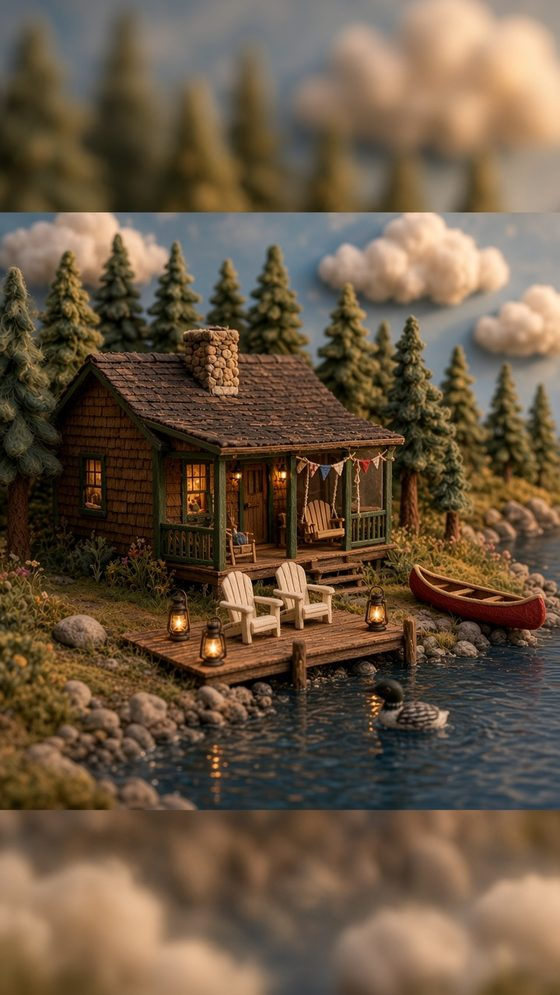
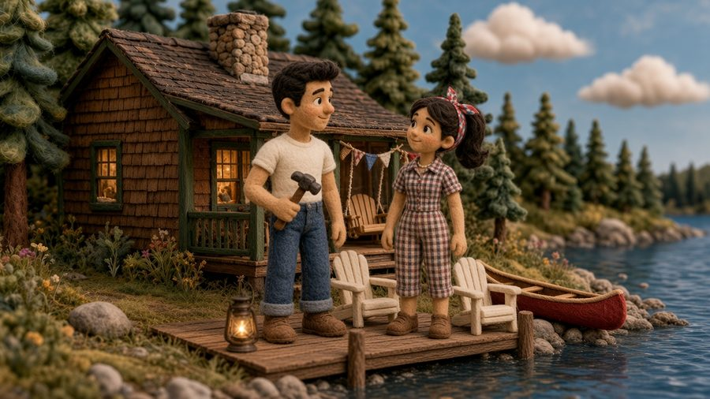
Shape: The classic family sitcom. Matriarch plus two married siblings' households, cousins, and a first fiancé arriving. Most comedy.
Central conflict: Whose turn is it?. Two married siblings, their spouses, their kids and a matriarch who wants everyone there at once. Time at the cabin is the currency, all year long.
Storylines it creates, year-round: Who gets the Fourth of July · Opening weekend and closing weekend · Thanksgiving at a closed-up cabin · A wedding on the dock (on whose week?) · Who actually does the work (Ruth) · The kids are adults now and want equal turns · Bringing a fiancé into the rotation
Time-travel device: The kitchen door frame. Pencil height marks since 1956: every child, every dog, one very tall boyfriend in 1991.
Narrator voice: Warm, dry, older man. Unhurried, faintly amused. Has seen 70 summers of family politics and loves every one.
Season: Summer peak; opening day in May, closing day in October.
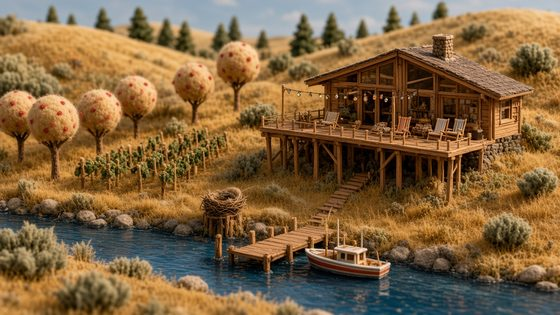
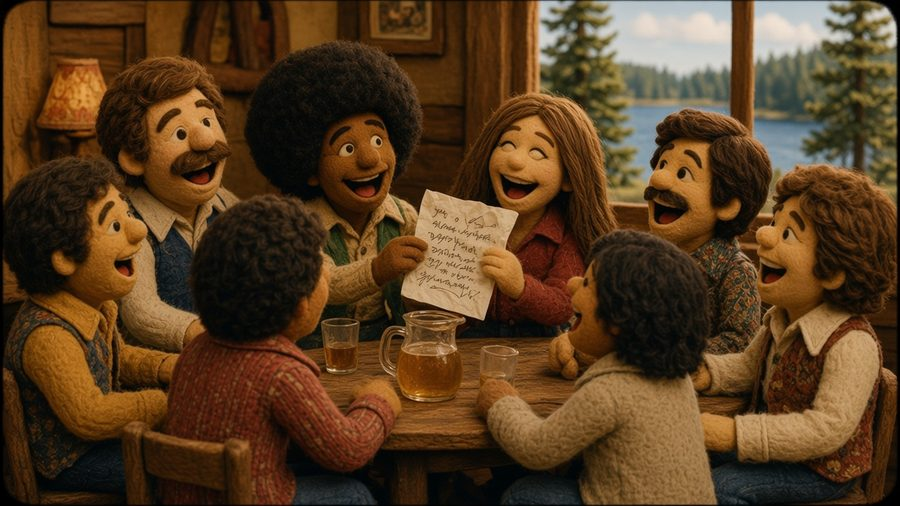
Shape: The present-day friends story. For 47 years, four friends ran this house on a 1979 bar napkin. This fall they sold it to Ray's son Danny and three friend households who are figuring out, right now, how to share one house without losing the friendship. Comedy, not heartstrings.
Central conflict: Friends, or co-owners? Can four friend households share one house and still be friends?
Storylines it creates, year-round: Whose weekend is it (and who reads the group chat) · Who pays for the dock, the propane, the boat · Party weekends vs. toddler weekends · The originals dropping by with advice · Kyle's spreadsheet vs. the napkin · Picking weeks for their first summer · Who's invited to the sunset toast
Time-travel device: Two napkins. The 1979 original hangs framed by the door; the new crew's napkin hangs next to it, and every argument ends with a new line. The house compares them ('In 1979 they settled this with a pitcher'). Used for laughs, not nostalgia.
Narrator voice: Easygoing, sun-baked, a little 70s. Spent 47 years with one friend group and is now breaking in a new one. Calls everyone 'kid'.
Season: Year-round, in the present: summer weekends, harvest and wine weekends in fall, snowy winter planning.
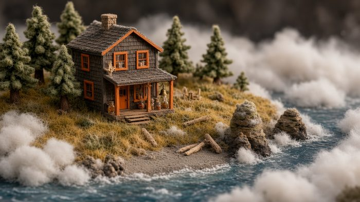
Next up if the launch worksOregon coast · fictional town of Tillicum Bay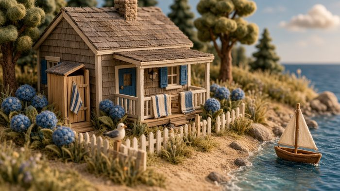
RetiredCape Cod, MassachusettsFull canon for all three (characters, timelines, series) is kept in the v4 archive.
Concept sketches in the felt-puppet style (Loon Point's are Episode 1 production sheets). Every sketch was checked against its written description; misses were redone.
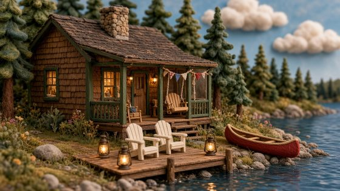
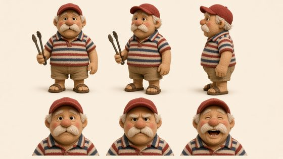
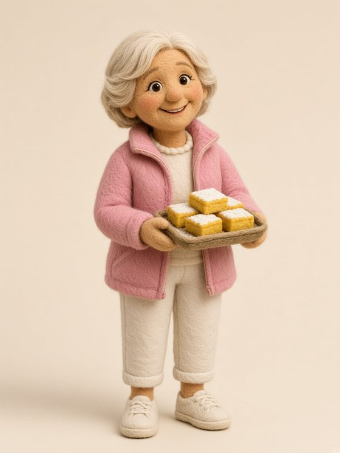
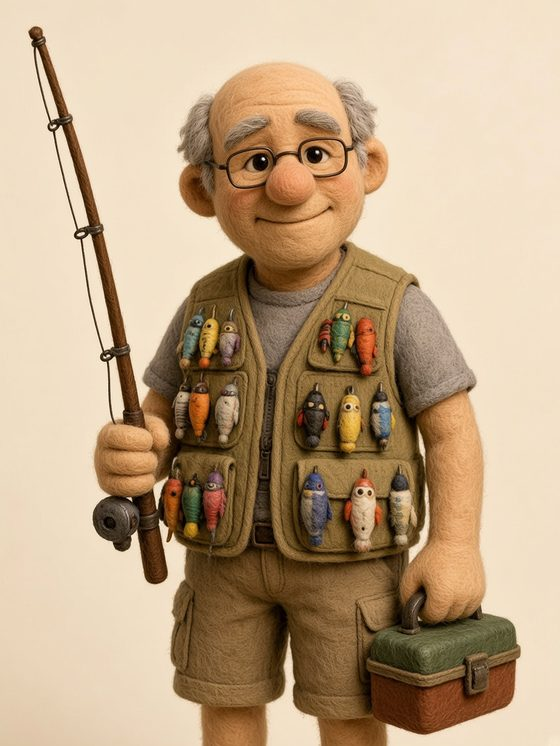
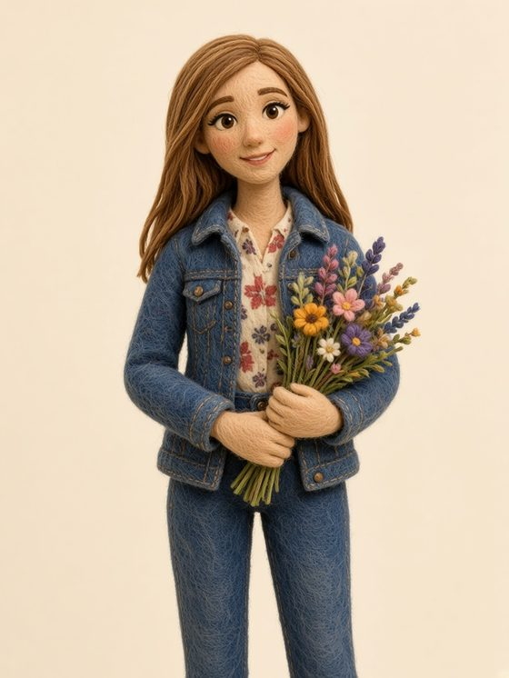
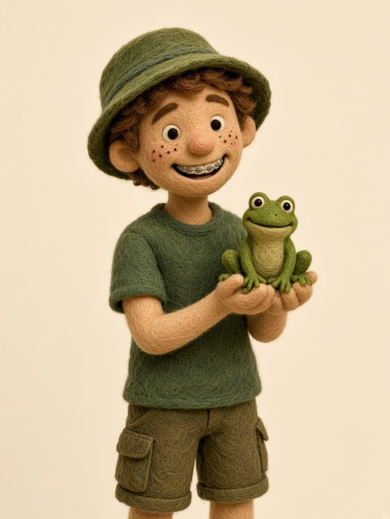
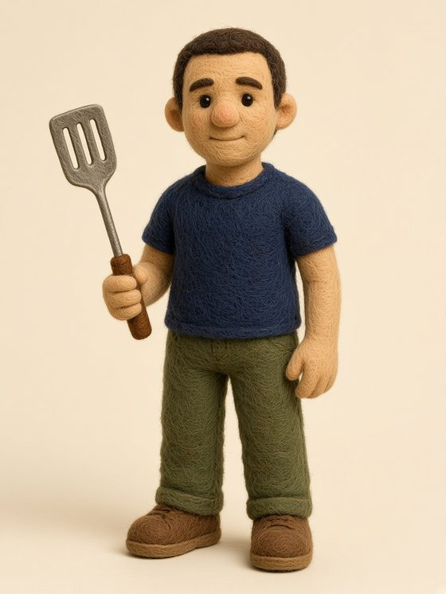
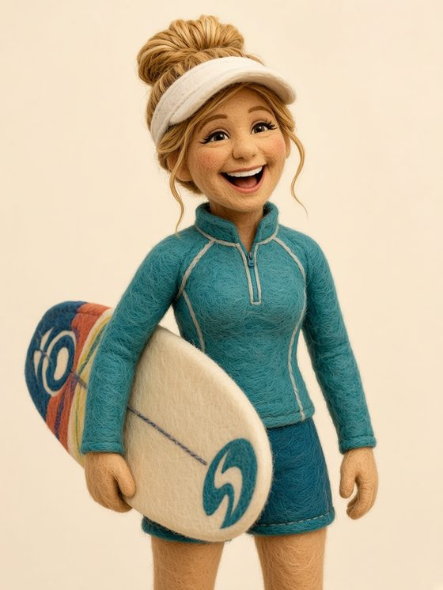
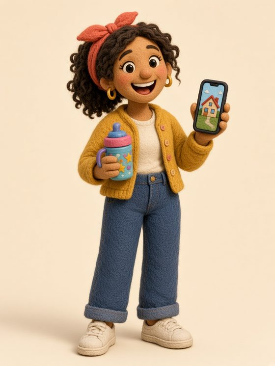
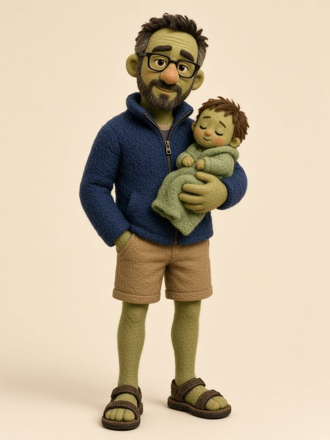
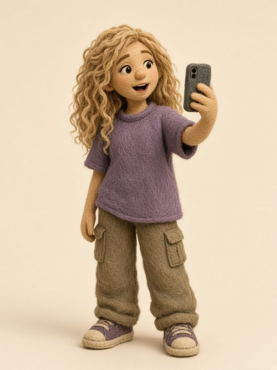
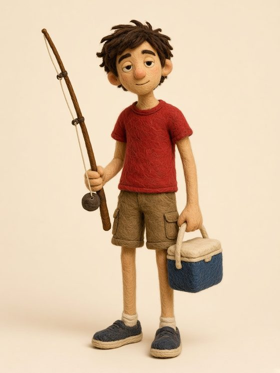
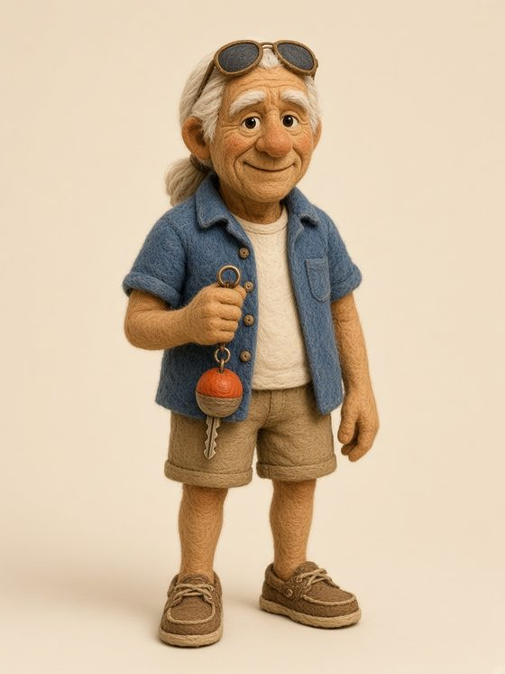
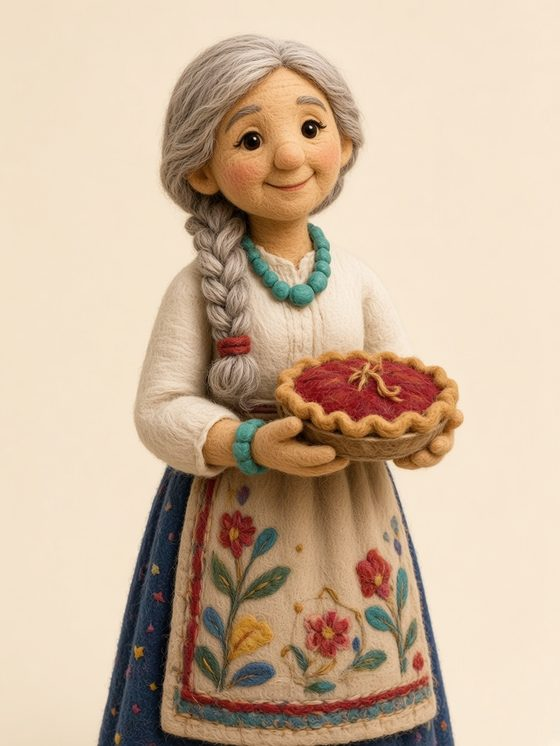
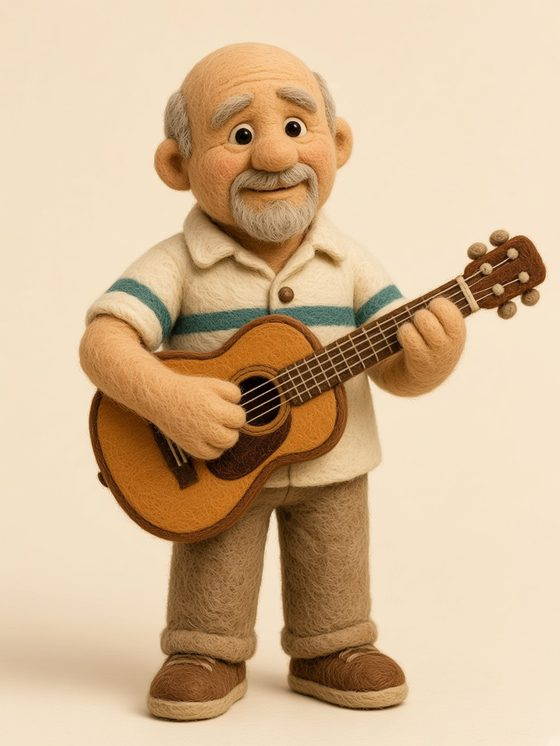
20 series. We launch 3–4 per house, keep what earns sends and follows, and retire the rest.
| # | Series | Type | Tone | Concept |
|---|---|---|---|---|
| 1 | Whose Turn Is It? | Flagship (central conflict) | Comedy | Time at the cabin, all year: the Fourth, opening weekend, Thanksgiving, a dock wedding. One fight per episode. |
| 2 | June Remembers | Founder stories | Heartstrings | June explains why each family rule exists, through 1956–1994 memories. |
| 3 | Dave's Traditions | Origin stories | Comedy | The real (dumb, touching) origin of every sacred Dave tradition. |
| 4 | The Cousins | Next generation | Comedy | Maya, Theo and Sam narrate; Theo's nature-documentary voice. |
| 5 | Meet Marcus | Newcomer arc | Comedy + heart | Kayla's fiancé from Phoenix survives his first summer. Every family has initiated a 'Marcus'. |
| 6 | The Door Frame | Time travel | Heartstrings | One pencil mark, one year, one story. |
| 7 | Ruth's Rules | Practical carousels | Useful | Real, fair house rules; where SplitHaus fits most naturally. |
| 8 | Opening Day / Closing Day | Seasonal | Nostalgia | The rituals of opening and closing a cabin. |
| 9 | The Loon Report | Micro-comedy | Playful | Walter the loon's deadpan season reports. |
| 10 | Dock Talk | Quote cards | Playful | One overheard line per card; highly sendable. |
| # | Series | Type | Tone | Concept |
|---|---|---|---|---|
| 1 | Friends, or Co-owners? | Flagship (central conflict) | Comedy | Four households, one house, their first year. Every episode is one real sharing problem. |
| 2 | The Napkin vs. the Spreadsheet | Running comparison | Comedy | Kyle's 14 tabs vs. the originals' napkin. The natural home for SplitHaus. |
| 3 | Who Pays? | Money between friends | Comedy | The dock, the propane, the Costco run: four ideas of fair. Played for laughs; never financial advice. |
| 4 | Glass Water | Rivalry | Comedy | The 6am boat-slot wars. |
| 5 | The Toddler Rule | Kids vs. no kids | Comedy | Jess and Omar's two-year-old vs. everyone's weekend plans. |
| 6 | The Originals Drop By | Cameos | Playful | Skip, Dee, Marlene and Ray show up uninvited with 47 years of advice. |
| 7 | Group Chat Files | Micro-series | Comedy | Brooke reads the adults' group chat like a true-crime podcast. |
| 8 | Danny's Grill | Ritual | Playful | Burgers in ten, arguments after. Danny settles one dispute per episode. |
| 9 | The Mayor's Office | Micro-comedy | Playful | The marmot's official business, mostly chips. |
| 10 | Chelan Seasons | Seasonal | Playful | Harvest weekends, wineries, first snow on the golden hills. Natural collab posts with Chelan businesses. |
October to early February, alternating between the two launch houses and timed to real seasons. About 30–35 seconds each: 1–2 animated wide shots, 1 animated character shot, the rest stills with slow camera moves.
Seventy summers, one Fourth of July, and a family that has never agreed on who gets it.
Meet the Quarterdeck. For 47 years, four friends ran this Lake Chelan house on a 1979 bar napkin. This fall they sold it to Ray's son Danny and three friend households who have never shared anything bigger than a Costco membership.
The last morning of the season. June closes the cabin, as she has for 70 Octobers.
Kyle presents next summer's calendar to the group. Four households, 14 tabs, and a group chat that immediately goes silent.
The true, deeply silly origin of Dave's sacred Fourth of July hot-dog flag.
A storm takes out a section of the dock. Four households, one repair bill, four different ideas of fair.
Kayla brings her fiancé from Phoenix for Thanksgiving at the closed-up cabin. He has never seen snow, a loon, or Dave.
Tina booked New Year's for a party. Jess and Omar booked it for a quiet week with a two-year-old. The calendar says both.
In January, Ruth sends out next summer. Kayla has picked a wedding date. It is the Fourth of July.
Picking weeks for their first summer. Draft order is settled the only way the originals will accept: whoever gets the boat started first.
Platforms show more of what people send, comment on, re-watch and come back for. Every format below causes one of those four. No "comment YES if…" bait, which Meta demotes; every question has a real answer we want.
Casually, the way people mention the app they actually use. Part of the house's life, not the point of the story.
| Day | Post | Format |
|---|---|---|
| Mon | Quote card (Dock Talk at Loon Point; Group Chat Files at the Quarterdeck) | Static |
| Tue | Episode (alternating houses) | Reel 25–35s |
| Wed | Rules / practical carousel | Carousel |
| Thu | Micro-comedy (Loon Report, the Mayor's Office) or an Ask the House reply | Reel 8–20s |
| Fri | Community: Guestbook, a follower's rule made canon | Static / carousel |
| Sun | Episode (the other house) | Reel 25–35s |
| Daily | Stories: polls, votes, quizzes, 'spot Walter' | Stories |
From our side-by-side test (watch it): the errors people notice are continuity mistakes, not image quality. So we route each shot to the model that handles it, and check every clip frame by frame.
| Asset | How | Cost |
|---|---|---|
| Character sheets, stills, carousels | Grok Imagine images (x.ai), matched to reference sheets | $0.02–0.07/image |
| Most shots | Stills with slow camera moves, cut in-house. Can't glitch. | $0 |
| Wide and environment shots (1–2 per episode) | Grok Imagine Video 1.5: the only cheaper model that kept the loon on the water | ~$0.71/clip |
| Character shots with hands or props (1 per episode) | Seedance 2.0: steadiest faces and props | ~$1.52/clip |
| Continuity check, every clip | 12 frames per clip: animals stay where they belong, props (June's cane) don't vanish, nothing duplicates | $0 |
| Two house voices | ElevenLabs Starter (commercial license); voice test | $6/month |
| Music | Licensed library or ElevenLabs credits | $0–20/month |
Estimate: about $6–8 per episode; about $70–90/month at 2 episodes a week plus static posts. Every paid run is quoted first and hard-capped. Agent (AI assistant) usage isn't included.
Tested and dropped: Wan 2.2 (the loon walked onto land; an extra canoe appeared). LTX-2.3 is the backup for wide shots.
| When | Focus | Ships |
|---|---|---|
| Weeks 1–2 (early Oct) | Launch both houses | Bio, highlights, submission form, template + newsletter; two voices locked; Ep. 1 Who Gets the Fourth? and Ep. 2 The Napkin; character cards for both casts |
| Weeks 3–6 (Oct to early Nov) | Rhythm + first interactivity | Ep. 3 Closing Day (launches Ask the House), Ep. 4 Fourteen Tabs, Ep. 5 The Hot Dog Flag |
| Weeks 7–8 (Nov) | You decide + Thanksgiving | Ep. 6 Who Pays for the Dock? (poll decides the ending), Ep. 7 Meet Marcus |
| Weeks 9–12 (Dec) | Holidays | Ep. 8 New Year's Eve, Two Ways; the poll's winning ending; Ask the House replies; Letters Between Houses |
| Weeks 13–14 (Jan) | 90-day review | Ep. 9 The Calendar; keep/cut per series; decide whether a third house launches (Agate House or Windhill) as its own series |
| Early Feb | Summer planning | Ep. 10 The Draft |
Measure: sends per reach, follows per 1,000 non-follower views, comments per 1,000 views, saves, submissions per week, list sign-ups. SplitHaus sign-ups are reported but aren't the gate. Organic from zero is slow; judge at 90 days.